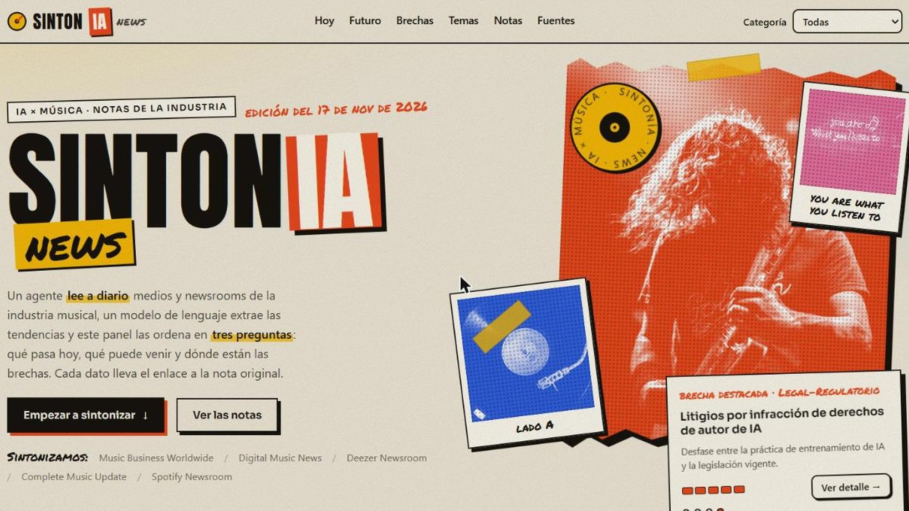
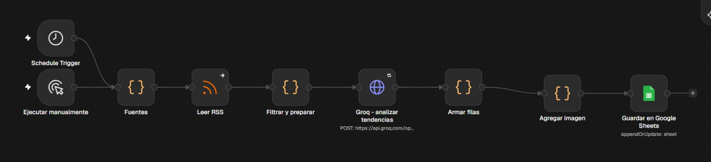

IA × música · notas de la industria
IA
news
Una página que lee la prensa musical todos los días y la ordena para que se entienda rápido.
Peyrettes · Ramirez · Tamame
Lado A
Tres preguntas
01
10 tendencias
02
20 proyecciones
03
Hoy vs. lo posible
Explorá por tema
9 de 30
La carpeta más grande
la mayor brecha, primero
01 · ¿Qué pasa hoy?
Tendencias que ya son parte de la industria.
cada tarjeta
por categoría
02 · ¿Qué puede venir?
20 proyecciones. Son estimaciones.
03 · ¿Dónde están las brechas?
la brecha es
las más grandes
Las fuentes
80 %
Deezer · Spotify · Music Business Worldwide · Hypebot · Digital Music News · Complete Music Update
transparencia
El resultado
Muchas noticias. Tres preguntas. Datos reales.
Abrir el dashboardmilagrostamame.github.io/sintonIA-news↗
Detrás de la página

n8n
Groq
Google Sheets
GitHub Pages
Claude + VS Code
SintonIA news
¿Preguntas?